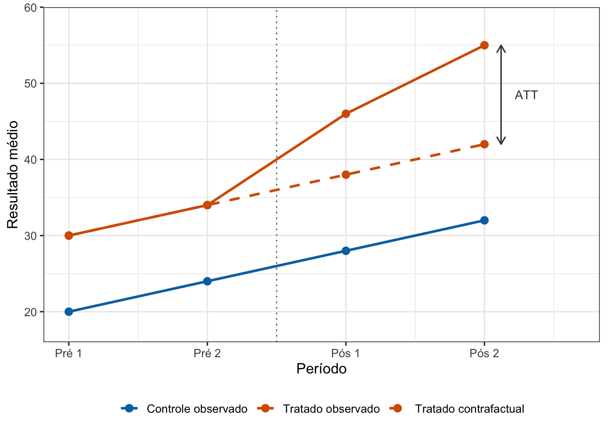
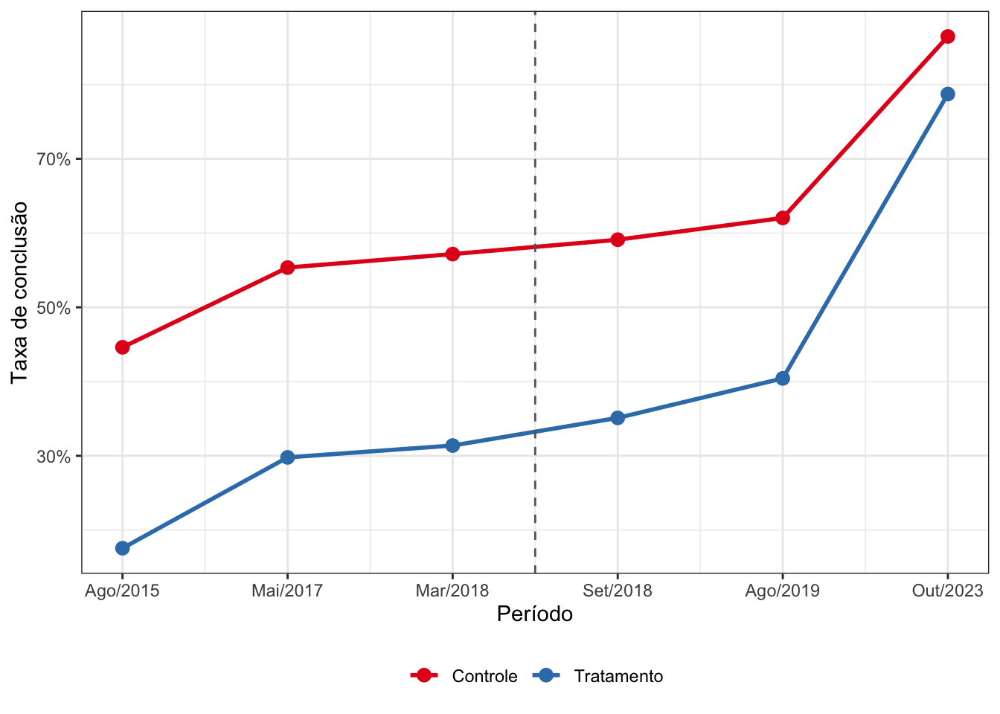
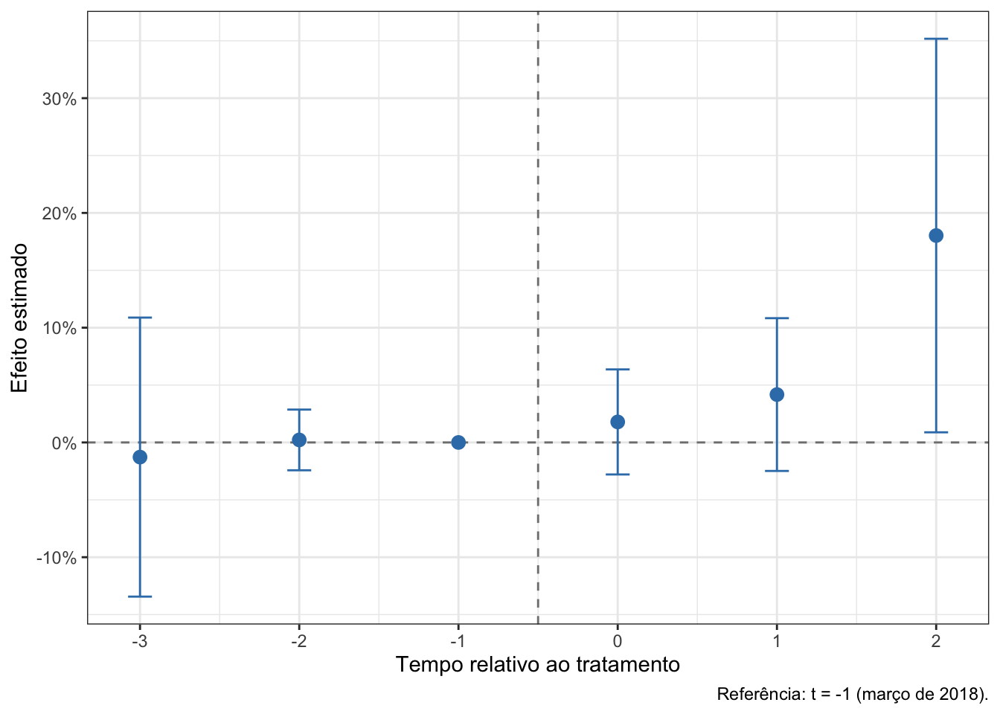
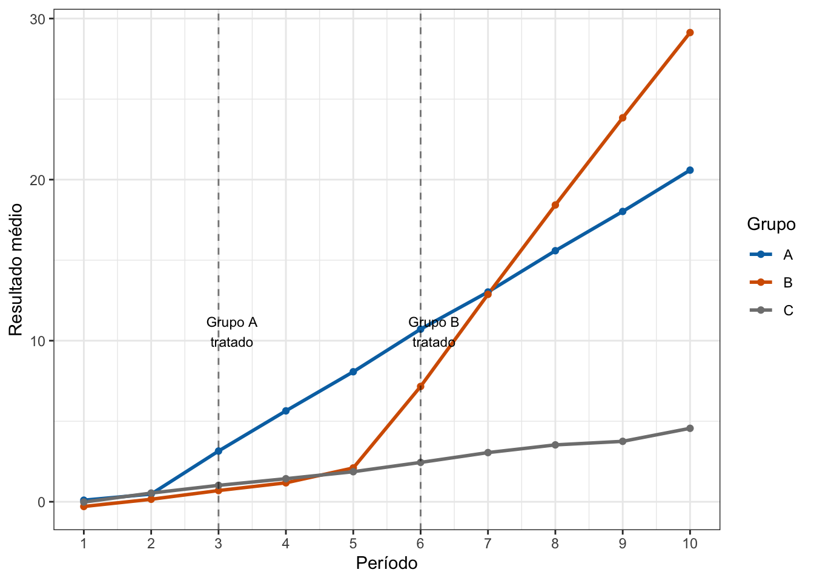
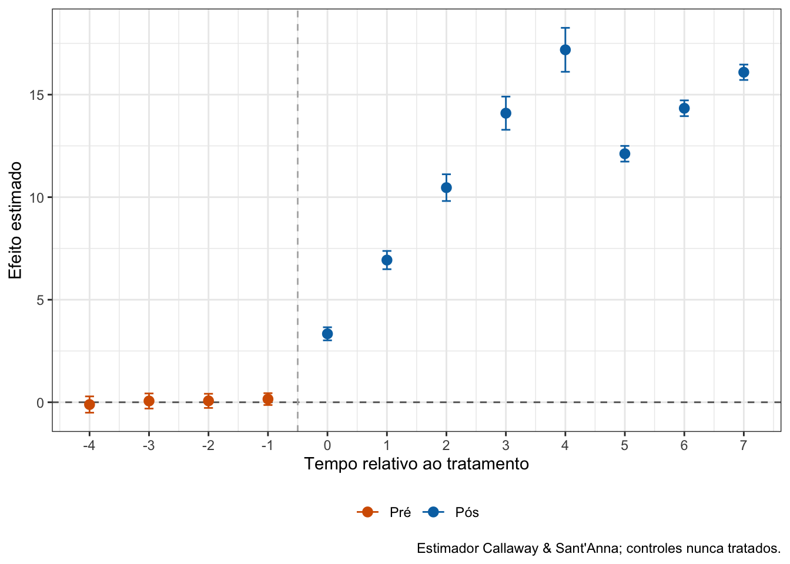
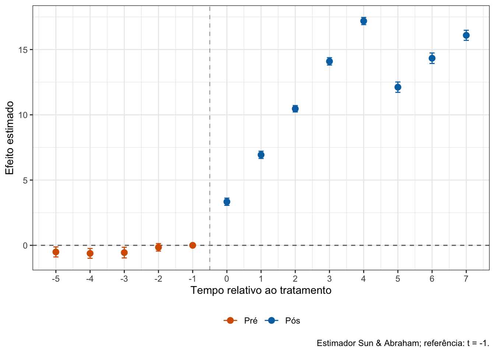
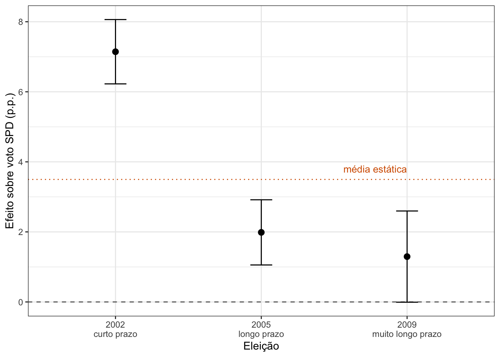

Capítulo 9 Diferença em Diferenças
9.1 Motivação: por que DiD?
Diferença em Diferenças (DiD) é o método quase-experimental mais utilizado em ciência política e economia aplicada. A ideia central é simples: se dois grupos seguem trajetórias paralelas antes de uma intervenção, a diferença nas suas trajetórias após a intervenção pode ser atribuída ao tratamento. Para tratamentos introdutórios complementares, ver Cunningham (2021) e Huntington-Klein (2022); para um exemplo clássico em economia aplicada, ver Card and Krueger (1994).
Considere um exemplo concreto. Suponha que duas cidades — Campinas e Ribeirão Preto — têm taxas de conclusão de obras públicas de 30% e 20%, respectivamente, em 2016. Em 2018, Campinas recebe um programa de monitoramento de obras, enquanto Ribeirão Preto não. Em 2018, Campinas tem taxa de 50% e Ribeirão Preto, 35%.
A variação temporal em Campinas é \(50\% - 30\% = 20\) p.p. Mas parte disso pode ser tendência geral — afinal, Ribeirão Preto também cresceu \(35\% - 20\% = 15\) p.p. sem tratamento. O DiD subtrai essa tendência: \(20 - 15 = 5\) p.p. Esse é o efeito estimado do programa.
\[ \underbrace{(50 - 30)}_{\Delta \text{Campinas}} - \underbrace{(35 - 20)}_{\Delta \text{Ribeirão}} = 20 - 15 = 5 \text{ p.p.} \]
Essa conta manual contém toda a lógica do DiD. O restante do capítulo formaliza essa intuição, discute quando ela é válida (tendências paralelas), mostra como estimar por regressão (TWFE) e apresenta os avanços metodológicos recentes para lidar com tratamento escalonado no tempo e efeitos heterogêneos.
Mapa do capítulo. O capítulo começa com o modelo 2×2 e seus pressupostos de identificação, incluindo tendências paralelas, escala do outcome, tendências paralelas condicionais, não-antecipação e spillovers. Em seguida, mostra como estimar DiD por TWFE, discute inferência e aplica o desenho ao Obra Transparente. A parte central trata da “revolução DiD”: event studies, viés do TWFE com tratamento escalonado, contaminação de coeficientes dinâmicos e estimadores modernos. O capítulo termina com análise de sensibilidade, uma segunda aplicação empírica (enchente do Elbe), extensões importantes e um checklist prático de desenho.
9.2 Modelo básico 2×2
Considere dois grupos e dois períodos de tempo, \(t \in \{1, 2\}\). O grupo tratado recebe a intervenção no período 2; o grupo controle nunca é tratado. Seja \(D_i \in \{0, 1\}\) o indicador de pertencer ao grupo tratado.
Definimos os resultados potenciais: \(Y_{it}(0)\) é o resultado da unidade \(i\) no período \(t\) na ausência de tratamento, e \(Y_{it}(1)\) é o resultado sob tratamento. O resultado observado é \(Y_{it} = D_i \cdot \mathbb{1}[t=2] \cdot Y_{it}(1) + (1 - D_i \cdot \mathbb{1}[t=2]) \cdot Y_{it}(0)\).
O estimando é o efeito médio do tratamento sobre os tratados (ATT) no período pós-tratamento:
\[ \tau^{ATT} = \mathbb{E}[Y_{i2}(1) - Y_{i2}(0) \mid D_i = 1] \]
Suponha que os resultados potenciais seguem a estrutura:
| Pré (\(t = 1\)) | Pós (\(t = 2\)) | |
|---|---|---|
| Controle (\(D_i = 0\)) | \(\alpha_i + \lambda_1\) | \(\alpha_i + \lambda_2\) |
| Tratado (\(D_i = 1\)) | \(\alpha_i + \lambda_1\) | \(\alpha_i + \lambda_2 + \tau_i\) |
Nessa tabela, \(\alpha_i\) é o efeito fixo de unidade (nível base), \(\lambda_t\) é o efeito fixo de tempo (tendência comum), e \(\tau_i\) é o efeito causal individual. No grupo controle, \(\tau_i = 0\) por definição.
A diferença temporal para cada grupo é:
Para o grupo tratado: \(\mathbb{E}[Y_{i2} - Y_{i1} \mid D_i = 1] = (\lambda_2 - \lambda_1) + \mathbb{E}[\tau_i \mid D_i = 1]\)
Para o grupo controle: \(\mathbb{E}[Y_{i2} - Y_{i1} \mid D_i = 0] = (\lambda_2 - \lambda_1)\)
A diferença entre essas duas diferenças elimina a tendência comum:
\[ \underbrace{\mathbb{E}[Y_{i2} - Y_{i1} \mid D_i = 1]}_{\Delta \text{Tratado}} - \underbrace{\mathbb{E}[Y_{i2} - Y_{i1} \mid D_i = 0]}_{\Delta \text{Controle}} = \mathbb{E}[\tau_i \mid D_i = 1] = \tau^{ATT} \]
O modelo básico 2×2 nos dá a intuição do DiD. Na prática, estimamos esse efeito por regressão, como veremos a seguir.
9.3 Pressupostos de identificação
9.3.1 Tendências paralelas
O pressuposto central do DiD é o de tendências paralelas (parallel trends, PT): na ausência de tratamento, a evolução média dos resultados teria sido a mesma nos dois grupos.
\[ \mathbb{E}[Y_{i2}(0) - Y_{i1}(0) \mid D_i = 1] = \mathbb{E}[Y_{i2}(0) - Y_{i1}(0) \mid D_i = 0] \]

Figura 9.1: Tendências paralelas no contrafactual sem tratamento. A linha tracejada mostra a trajetória que o grupo tratado teria seguido sem tratamento; ela cresce no mesmo ritmo do controle no período pós-tratamento. A distância vertical entre o tratado observado e o contrafactual no pós é o ATT.
Na Figura 9.1, os grupos começam em níveis diferentes. Isso não viola DiD. A suposição é que, sem tratamento, o grupo tratado teria continuado em uma trajetória paralela à do grupo controle. O efeito causal é a distância entre a trajetória observada dos tratados e essa trajetória contrafactual no período pós-tratamento.
Note que o lado esquerdo envolve um contrafactual — o que teria acontecido com os tratados sem tratamento — e portanto não é diretamente testável. Podemos verificar se as tendências foram paralelas no período pré-tratamento (o que é necessário mas não suficiente), mas não podemos verificar se continuariam paralelas no período pós.
9.3.2 Tendências paralelas em qual escala?
O pressuposto de tendências paralelas é uma restrição sobre a forma funcional do resultado. Dizer que tratados e controles teriam tendências paralelas em níveis não é o mesmo que dizer que teriam tendências paralelas em logs, percentuais, taxas padronizadas ou qualquer outra transformação. Se duas unidades crescem pela mesma quantidade absoluta, suas trajetórias são paralelas em níveis; se crescem pela mesma taxa percentual, são paralelas em logs. As duas coisas só coincidem em casos especiais.
Isso importa porque o DiD não é automaticamente invariante à transformação do outcome. Uma política pode parecer aumentar \(Y\) em 5 pontos percentuais em níveis, mas parecer ter efeito proporcional diferente se estimarmos \(\log(Y)\); e a transformação também muda qual trajetória contrafactual estamos supondo. Roth and Sant’Anna (2023) mostram que, para identificar pontualmente o ATT, o pesquisador precisa justificar por que a forma funcional escolhida é a correta, por que o tratamento é plausivelmente quase aleatório, ou usar uma estratégia que recupere a distribuição contrafactual inteira. Hull (2024) enfatiza essa pergunta de forma pedagógica como: “tendências paralelas em quê?”.
Regra prática: escolha a escala do outcome antes de olhar os resultados, explique a teoria substantiva por trás da escolha e, quando a escala for discutível, reporte a sensibilidade dos resultados a transformações plausíveis. Não trate logs como uma escolha puramente técnica.
9.3.3 Equivalência entre PT e TWFE
Uma forma paramétrica equivalente é supor que os resultados potenciais sem tratamento seguem um modelo de efeitos fixos duplos:
\[ Y_{it}(0) = \alpha_i + \lambda_t + \varepsilon_{it}, \quad \text{com } \mathbb{E}[\varepsilon_{it}] = 0 \]
Proposição. O modelo TWFE implica tendências paralelas, e vice-versa.
Prova (TWFE \(\Rightarrow\) PT). Se \(Y_{it}(0) = \alpha_i + \lambda_t + \varepsilon_{it}\), então:
\[ \mathbb{E}[Y_{i2}(0) - Y_{i1}(0) \mid D_i = d] = (\alpha_i + \lambda_2) - (\alpha_i + \lambda_1) = \lambda_2 - \lambda_1 \]
para \(d \in \{0, 1\}\). Como a diferença \(\lambda_2 - \lambda_1\) não depende de \(d\), PT é satisfeita. \(\square\)
Prova (PT \(\Rightarrow\) TWFE). Defina \(\lambda_1 \equiv 0\) (normalização) e \(\alpha_i \equiv \mathbb{E}[Y_{i1}(0)]\). Para qualquer \(t\), defina:
\[ \lambda_t \equiv \mathbb{E}[Y_{i^*t}(0) - Y_{i^*1}(0)] \]
onde \(i^*\) é uma unidade de referência arbitrária (por exemplo, do grupo controle). Pela suposição de PT, \(\mathbb{E}[Y_{it}(0) - Y_{i1}(0)]\) é igual para todas as unidades, então:
\[ \mathbb{E}[Y_{it}(0)] = \mathbb{E}[Y_{i1}(0)] + \lambda_t = \alpha_i + \lambda_t \]
Definindo \(\varepsilon_{it} = Y_{it}(0) - \alpha_i - \lambda_t\), temos \(\mathbb{E}[\varepsilon_{it}] = 0\) por construção. \(\square\)
9.3.4 Tendências paralelas condicionais e covariáveis
Em muitas aplicações, o pressuposto de tendências paralelas incondicional é forte demais: os grupos tratado e controle diferem em características observáveis que afetam a trajetória do resultado. Incluir covariáveis pode tornar o pressuposto mais plausível, mas como incluí-las importa muito. Há duas abordagens conceitualmente distintas, e uma armadilha comum que deve ser evitada.
9.3.4.1 Abordagem 1: Enriquecer o modelo de \(Y(0)\)
Borusyak, Jaravel, and Spiess (2024) propõem enriquecer o modelo de resultados potenciais não-tratados: \[ \mathbb{E}[Y_{it}(0)] = \alpha_i + \beta_t + \gamma' X_{it} \]
Esse modelo é mais flexível que o TWFE aditivo puro e permite incluir:
- Covariáveis contínuas: variáveis que afetam o nível de \(Y\) (evitando maus controles, como veremos abaixo)
- Tendências lineares específicas por unidade: \(\gamma_i \cdot t\), de modo que cada unidade tenha sua própria tendência temporal
- Interações tempo \(\times\) baseline: \(\gamma'_t X_i\), por exemplo, efeitos fixos de estado \(\times\) ano em um painel de condados
A chave é que os parâmetros \(\gamma\) são estimados usando apenas as observações não-tratadas (\(D_{it} = 0\)). Depois, o contrafactual \(\hat{Y}_{it}(0)\) é imputado para as observações tratadas. Isso evita o problema de contaminar a estimativa de \(\gamma\) com efeitos do tratamento.
9.3.4.2 Abordagem 2: Tendências paralelas condicionais
Uma segunda abordagem, desenvolvida por Abadie (2005) e Sant’Anna and Zhao (2020) para o caso não-escalonado, condiciona as tendências paralelas em características baseline \(X_i\):
\[ \mathbb{E}[Y_{it}(0) - Y_{it-1}(0) \mid D_i = 1, X_i] = \mathbb{E}[Y_{it}(0) - Y_{it-1}(0) \mid D_i = 0, X_i] \]
Ou seja, as tendências são paralelas dentro de estratos definidos por \(X_i\). Isso transforma o problema em uma versão de seleção em observáveis para \(\Delta Y_{it}\). Há três abordagens principais para estimar o DiD condicional:
- Ponderação por propensity score inverso (IPW): ponderar as unidades de controle para que a distribuição de \(X\) replique a do grupo tratado (Abadie 2005).
- Regressão de resultado (outcome regression): modelar \(\mathbb{E}[\Delta Y_{it}(0) \mid X_i]\) parametricamente.
- Duplamente robusta (doubly robust): combinar IPW e regressão. Consistente se qualquer uma das duas especificações estiver correta. O pacote
didimplementa essa abordagem (Sant’Anna and Zhao 2020).
Callaway and Sant’Anna (2021) estendem essa lógica para tratamento escalonado, estimando um propensity score separado para cada coorte e período. Wooldridge (2021) propõe uma extensão do TWFE (extended TWFE) que inclui interações entre os efeitos fixos de tempo e as covariáveis, obtendo resultados robustos a efeitos heterogêneos sob certas condições.
9.3.4.3 O que não fazer: covariáveis no TWFE ingenuamente
A prática mais comum na pesquisa aplicada é simplesmente adicionar covariáveis à regressão TWFE: \[ Y_{it} = \alpha_i + \beta_t + \tau D_{it} + \gamma' X_{it} + \varepsilon_{it} \]
Essa abordagem é problemática por múltiplas razões, mesmo no caso mais simples de dois períodos:
Contaminação por efeitos do tratamento. Com efeitos heterogêneos, \(\hat{\gamma}\) é estimado usando todas as observações, inclusive as tratadas. Isso pode atribuir indevidamente parte do efeito do tratamento às covariáveis, enviesando tanto \(\hat{\gamma}\) quanto \(\hat{\tau}\) (Borusyak, Jaravel, and Spiess 2024; Caetano et al. 2024).
Covariáveis variantes no tempo como bad controls. Quando \(X_{it}\) pode ser afetado pelo próprio tratamento, por exemplo emprego quando o tratamento é um programa social, incluí-lo como controle introduz viés de variável intermediária: o clássico problema de bad controls (Angrist and Pischke 2009). A sabedoria convencional de simplesmente “não incluir” essas variáveis também é insuficiente: quando o PTA condicional depende dessas covariáveis, omiti-las viola a suposição de identificação (Caetano et al. 2024).
Covariate effect bias. Lin and Zhang (2022) mostram que, mesmo com efeitos do tratamento homogêneos e apenas dois períodos, a inclusão de covariáveis variantes no tempo no TWFE gera um viés adicional, o covariate effect bias. O problema não depende de efeitos dinâmicos do tratamento; ele surge quando o efeito das covariáveis sobre \(Y(0)\) pode variar no tempo, enquanto a regressão impõe um coeficiente comum para essas covariáveis. Esse viés persiste mesmo quando o tratamento não afeta as covariáveis.
Reversão de pesos. Covariáveis com valores incomuns no grupo tratado, relativo ao controle, podem receber pesos desproporcionais na regressão, distorcendo a estimativa do ATT.
9.3.4.4 Baseline vs. time-varying: uma distinção crucial
A distinção entre covariáveis baseline (\(X_i\), fixas ou medidas antes do tratamento) e variantes no tempo (\(X_{it}\), que mudam ao longo do tempo) é fundamental:
Covariáveis baseline (\(X_i\)) são seguras de incluir: não podem ser afetadas pelo tratamento e não geram o problema de bad controls. São absorvidas pelos efeitos fixos de unidade em um painel, mas podem entrar via interações com o tempo (\(\gamma'_t X_i\)) ou no propensity score da abordagem 2.
Covariáveis variantes no tempo (\(X_{it}\)) exigem cautela. Se o tratamento pode afetar \(X_{it}\), incluí-la diretamente é um bad control. Caetano et al. (2024) propõem estratégias que lidam com covariáveis variantes no tempo que podem ser afetadas pelo tratamento, incluindo estimandos duplamente robustos e abordagens de imputação que usam o valor que a covariável teria tido na ausência de tratamento.
Regra prática: sempre que possível, use a abordagem 1, enriquecendo o modelo de \(Y(0)\) com estimação apenas nos não-tratados, ou a abordagem 2, PT condicional com covariáveis baseline e estimação duplamente robusta. Evite adicionar covariáveis variantes no tempo diretamente ao TWFE.
9.3.5 Não-antecipação
O segundo pressuposto é de não-antecipação: o tratamento não tem efeito antes de ser implementado.
\[ \mathbb{E}[Y_{i1}(0)] = \mathbb{E}[Y_{i1}(1)] \quad \forall i \]
Isso exclui, por exemplo, que a mera expectativa de um programa futuro altere o comportamento das unidades tratadas antes do programa começar. Em muitas aplicações em ciência política, esse pressuposto é plausível quando a intervenção é inesperada ou quando não há incentivo para reagir antecipadamente.
9.3.6 Spillovers e nível de atribuição
O DiD também exige que o tratamento de uma unidade não altere o resultado de outra unidade usada como controle. Essa é a versão de SUTVA relevante para desenhos de painel. Se uma política implementada em municípios tratados muda o comportamento de municípios de controle, o grupo controle deixa de representar a trajetória contrafactual sem tratamento.
O nível de atribuição do tratamento também define a inferência. No caso Obra Transparente, o tratamento ocorre no nível municipal, embora os dados estejam no nível da obra. As obras dentro do mesmo município não são unidades independentes de atribuição. Por isso, a incerteza deve ser calculada no nível do município, e a interpretação causal deve tratar o município como a unidade exposta ao tratamento.
Choques comuns não invalidam o DiD. O problema surge quando choques no período pós-tratamento afetam diferentemente tratados e controles, alterando a tendência contrafactual relativa entre os grupos.
9.4 Estimação por TWFE
No caso 2×2, o DiD pode ser estimado por regressão de duas formas equivalentes.
Parametrização por interação:
\[ Y_{it} = \beta_0 + \beta_1 \text{Post}_t + \beta_2 \text{Treat}_i + \tau (\text{Post}_t \times \text{Treat}_i) + \varepsilon_{it} \]
onde \(\text{Post}_t = \mathbb{1}[t = 2]\) e \(\text{Treat}_i = D_i\).
Parametrização por efeitos fixos (TWFE):
\[ Y_{it} = \alpha_i + \lambda_t + \tau D_{it} + \varepsilon_{it} \]
onde \(D_{it} = D_i \cdot \mathbb{1}[t = 2]\) é o indicador de tratamento efetivo.
No caso 2×2, as duas parametrizações produzem estimativas idênticas de \(\hat{\tau}\). A segunda é chamada two-way fixed effects (TWFE) porque inclui efeitos fixos de unidade (\(\alpha_i\)) e de tempo (\(\lambda_t\)).
Importante: no caso 2×2, o TWFE é inofensivo — ele recupera exatamente o ATT. Os problemas surgem quando o tratamento é adotado em momentos diferentes por diferentes unidades (staggered treatment), como veremos na seção 7.
9.5 Inferência em DiD
A estimativa pontual de DiD é apenas metade do problema. Em painéis, os erros normalmente são correlacionados ao longo do tempo dentro da mesma unidade, e o tratamento muitas vezes é atribuído em nível agregado: municípios, estados, escolas, firmas, distritos eleitorais etc. Ignorar essa estrutura faz os erros-padrão parecerem menores do que são.
Bertrand, Duflo, and Mullainathan (2004) mostram o problema com placebos em painéis estaduais: quando há autocorrelação serial e tratamento persistente, erros-padrão robustos convencionais rejeitam a hipótese nula com frequência muito maior do que 5%. A recomendação prática é clusterizar no nível da variação de tratamento ou da atribuição da política. Se a política varia por estado, clusterize por estado; se varia por município, clusterize por município; se os dados estão no nível individual, mas o tratamento é municipal, a unidade relevante para inferência continua sendo o município.
Essa regra tem duas implicações importantes. Primeiro, o número efetivo de observações para inferência é o número de clusters, não o número de linhas do banco. Um painel com milhões de indivíduos, mas 20 municípios tratados/controles, tem pouca informação independente para inferência. Segundo, “clusterizar no nível mais baixo” quase nunca é conservador quando a política é atribuída em nível mais alto: clusterizar por obra, aluno ou indivíduo ignora que todos dentro do mesmo município ou estado receberam a mesma política.
Quando há poucos clusters — especialmente poucos clusters tratados — os erros-padrão clusterizados assintóticos podem continuar ruins. Nesse caso, considere wild cluster bootstrap, inferência por randomização quando o mecanismo de atribuição é defensável, ou uma apresentação mais honesta de incerteza baseada no número de clusters. Em event studies, também faz sentido distinguir intervalos ponto-a-ponto de bandas simultâneas: se vários coeficientes de pré-tratamento são inspecionados ao mesmo tempo, bandas simultâneas comunicam melhor a incerteza conjunta (Freyaldenhoven, Hansen, and Shapiro 2019; Goldsmith-Pinkham 2026).
Nota sobre wild cluster bootstrap. O wild cluster bootstrap não sorteia observações individuais nem clusters inteiros. Ele mantém os clusters fixos e multiplica os resíduos de cada cluster por pesos aleatórios, frequentemente \(+1\) ou \(-1\). Todos os resíduos dentro do mesmo cluster recebem o mesmo peso, preservando a correlação interna. Com esses resíduos reponderados, criamos muitos outcomes simulados, reestimamos o modelo e usamos a distribuição bootstrap da estatística de teste para calcular p-valores ou intervalos. A vantagem sobre o bootstrap clusterizado comum é que, com poucos clusters, sortear clusters com reposição pode gerar amostras artificiais ruins, repetindo muito alguns clusters e excluindo outros. O wild cluster bootstrap costuma produzir inferência mais confiável quando há poucos clusters ou poucos clusters tratados, embora ainda dependa de o nível de clusterização corresponder ao nível de atribuição do tratamento.
9.6 Aplicação 1: Obra Transparente
Vamos aplicar o DiD a dados reais brasileiros usando a versão submetida ao Journal of Development Studies do paper sobre o projeto Obra Transparente. A intervenção foi conduzida pela Transparência Brasil entre maio de 2017 e junho de 2019, em parceria com 21 organizações locais da sociedade civil em municípios do Sul e Sudeste. Essas organizações receberam treinamento e apoio para monitorar obras de creches e escolas financiadas pelo FNDE.
O outcome é binário: a obra estava concluída naquele período ou não. A unidade observada é a obra, mas o tratamento é municipal. O painel é balanceado, com seis períodos entre agosto de 2015 e outubro de 2023. O monitoramento ativo começa em setembro de 2018, que codificamos como o primeiro período tratado.
library(here, quietly = TRUE)
library(knitr)
library(kableExtra)
library(tidyverse)
library(fixest)
ot_root <- here("data", "obra_transparente_jds", "replication_package")
ot_panel_file <- file.path(ot_root, "data", "processed", "did_panel_6periods.rds")
ot_results_file <- file.path(ot_root, "data", "processed", "did_results_6periods.rds")
if (!file.exists(ot_panel_file) || !file.exists(ot_results_file)) {
source(here("scripts", "prepare_obra_transparente_jds.R"))
}
did_panel <- readRDS(ot_panel_file)
did_results <- readRDS(ot_results_file)
completion_rates <- readr::read_csv(
file.path(ot_root, "output", "tables", "table2_completion_rates.csv"),
show_col_types = FALSE
)
wild_results <- readr::read_csv(
file.path(ot_root, "output", "tables", "wild_bootstrap_results.csv"),
show_col_types = FALSE
)
period_labels <- c(
"0" = "Ago/2015",
"1" = "Mai/2017",
"2" = "Mar/2018",
"3" = "Set/2018",
"4" = "Ago/2019",
"5" = "Out/2023"
)
panel_summary <- tibble::tibble(
Medida = c("Obras", "Municípios", "Municípios tratados", "Períodos"),
Valor = c(
dplyr::n_distinct(did_panel$id),
dplyr::n_distinct(did_panel$municipio),
dplyr::n_distinct(did_panel$municipio[did_panel$group_treated == 1]),
dplyr::n_distinct(did_panel$periodo)
)
)
panel_summary %>%
kable(caption = "Estrutura do painel Obra Transparente — versão JDS")| Medida | Valor |
|---|---|
| Obras | 3494 |
| Municípios | 1845 |
| Municípios tratados | 21 |
| Períodos | 6 |
Antes da regressão, olhe a conta descritiva. Os municípios tratados começam com taxa de conclusão bem menor que a dos controles. Isso não invalida o DiD: o pressuposto é sobre tendências contrafactuais, não sobre igualdade de níveis.
completion_rates %>%
mutate(periodo_label = period_labels[as.character(periodo)]) %>%
dplyr::select(
periodo_label,
controle = Control,
tratamento = Treatment,
diferenca = Diff,
did = DiD
) %>%
kable(
caption = "Taxa de conclusão de obras por período e grupo (%)",
digits = 1,
col.names = c("Período", "Controle", "Tratamento", "Diferença", "DiD")
)| Período | Controle | Tratamento | Diferença | DiD |
|---|---|---|---|---|
| Ago/2015 | 44.6 | 17.6 | -27.1 | NA |
| Mai/2017 | 55.4 | 29.8 | -25.6 | 1.5 |
| Mar/2018 | 57.2 | 31.4 | -25.8 | -0.2 |
| Set/2018 | 59.1 | 35.1 | -24.0 | 1.8 |
| Ago/2019 | 62.0 | 40.4 | -21.6 | 2.4 |
| Out/2023 | 86.5 | 78.7 | -7.8 | 13.9 |
O gráfico abaixo mostra a evolução da taxa de conclusão por grupo. As diferenças de nível são grandes, mas as tendências pré-tratamento são próximas. O salto maior aparece no último período, em outubro de 2023, o que também exige cautela substantiva: esse intervalo inclui a pandemia de COVID-19.

Figura 9.2: Evolução da taxa de conclusão de obras por grupo. Linha vertical indica o início do tratamento em setembro de 2018.
O modelo estático do paper usa todos os seis períodos e compara a média dos períodos pós-tratamento com a trajetória contrafactual estimada a partir dos controles. A especificação inclui efeitos fixos de obra e de período:
\[ Y_{it} = \alpha_i + \lambda_t + \tau(\text{Tratado}_i \times \text{Pós}_t) + \varepsilon_{it}. \]
did_ot_static <- feols(
concluida ~ treat_post | id + periodo,
data = did_panel,
cluster = ~municipio
)
ot_static_coef <- coeftable(did_ot_static)
ot_static_est <- unname(ot_static_coef["treat_post", "Estimate"])
ot_static_se <- unname(ot_static_coef["treat_post", "Std. Error"])
ot_static_p <- unname(ot_static_coef["treat_post", "Pr(>|t|)"])
tibble::tibble(
Estimando = "ATT médio pós-tratamento",
Estimativa = round(ot_static_est, 3),
`Erro-padrão` = round(ot_static_se, 3),
`IC 95%` = sprintf(
"[%.3f, %.3f]",
ot_static_est - 1.96 * ot_static_se,
ot_static_est + 1.96 * ot_static_se
),
`p-valor` = round(ot_static_p, 3),
Interpretação = "Aumento médio de 8,3 p.p. na conclusão das obras"
) %>%
kable(
caption = "DiD estático — Obra Transparente (versão JDS)"
)| Estimando | Estimativa | Erro-padrão | IC 95% | p-valor | Interpretação |
|---|---|---|---|---|---|
| ATT médio pós-tratamento | 0.083 | 0.034 | [0.017, 0.150] | 0.013 | Aumento médio de 8,3 p.p. na conclusão das obras |
O coeficiente estima um aumento médio de cerca de 8,3 pontos percentuais na probabilidade de conclusão das obras nos municípios tratados. Essa é a estimativa estática: ela resume todos os períodos pós-tratamento em um único número. A próxima pergunta é dinâmica: o efeito aparece imediatamente ou cresce ao longo do tempo?
9.7 DiD dinâmico e event study
Na prática, raramente temos apenas dois períodos. Com múltiplos períodos, podemos estimar um event study (estudo de evento) que mostra a dinâmica do efeito ao longo do tempo. A especificação é:
\[ Y_{it} = \alpha_i + \lambda_t + \sum_{k \neq -1} \delta_k \cdot \mathbb{1}[t - G_i = k] + \varepsilon_{it} \]
onde \(G_i\) é o período em que a unidade \(i\) é primeiro tratada (com \(G_i = \infty\) para nunca-tratados), e \(k\) mede a distância ao tratamento (tempo relativo). O período \(k = -1\) (um antes do tratamento) é a categoria de referência.
Os coeficientes \(\delta_k\) têm interpretação direta:
- Para \(k < -1\) (pré-tratamento): se as tendências são paralelas, devemos ter \(\delta_k \approx 0\). Esses coeficientes servem como diagnóstico (mas não teste definitivo) de PT.
- Para \(k \geq 0\) (pós-tratamento): \(\delta_k\) estima o efeito do tratamento \(k\) períodos após a adoção.
Essa interpretação é direta quando todas as unidades tratadas adotam no mesmo período. Com adoção escalonada e efeitos heterogêneos, a especificação TWFE dinâmica pode combinar comparações inadequadas. Voltaremos a esse problema na seção sobre tratamento escalonado.
Apliquemos aos dados Obra Transparente. Como o tratamento começa em setembro de 2018, usamos março de 2018 (\(t=-1\)) como referência:
did_panel <- did_panel %>%
mutate(
treat_m3 = group_treated * (rel_time == -3),
treat_m2 = group_treated * (rel_time == -2),
treat_0 = group_treated * (rel_time == 0),
treat_p1 = group_treated * (rel_time == 1),
treat_p2 = group_treated * (rel_time == 2)
)
did_ot_event <- feols(
concluida ~ treat_m3 + treat_m2 + treat_0 + treat_p1 + treat_p2 | id + periodo,
data = did_panel,
cluster = ~municipio
)
event_coefs <- tibble::tibble(
tempo_relativo = c(-3, -2, -1, 0, 1, 2),
estimativa = c(
unname(coef(did_ot_event)["treat_m3"]),
unname(coef(did_ot_event)["treat_m2"]),
0,
unname(coef(did_ot_event)["treat_0"]),
unname(coef(did_ot_event)["treat_p1"]),
unname(coef(did_ot_event)["treat_p2"])
),
erro_padrao = c(
unname(se(did_ot_event)["treat_m3"]),
unname(se(did_ot_event)["treat_m2"]),
NA_real_,
unname(se(did_ot_event)["treat_0"]),
unname(se(did_ot_event)["treat_p1"]),
unname(se(did_ot_event)["treat_p2"])
),
p_valor = c(
unname(pvalue(did_ot_event)["treat_m3"]),
unname(pvalue(did_ot_event)["treat_m2"]),
NA_real_,
unname(pvalue(did_ot_event)["treat_0"]),
unname(pvalue(did_ot_event)["treat_p1"]),
unname(pvalue(did_ot_event)["treat_p2"])
)
) %>%
mutate(
ic_inf = estimativa - 1.96 * erro_padrao,
ic_sup = estimativa + 1.96 * erro_padrao
)
event_coefs %>%
mutate(
tempo_relativo = case_when(
tempo_relativo == -1 ~ "t = -1 (referência)",
tempo_relativo > 0 ~ paste0("t = +", tempo_relativo),
TRUE ~ paste0("t = ", tempo_relativo)
),
estimativa = sprintf("%.3f", estimativa),
erro_padrao = if_else(is.na(erro_padrao), "Referência", sprintf("%.3f", erro_padrao)),
p_valor = if_else(is.na(p_valor), "Referência", sprintf("%.3f", p_valor))
) %>%
dplyr::select(
tempo_relativo,
estimativa,
erro_padrao,
p_valor
) %>%
kable(
caption = "Event study — Obra Transparente",
col.names = c("Tempo relativo", "Estimativa", "Erro-padrão", "p-valor")
)| Tempo relativo | Estimativa | Erro-padrão | p-valor |
|---|---|---|---|
| t = -3 | -0.013 | 0.062 | 0.837 |
| t = -2 | 0.002 | 0.013 | 0.871 |
| t = -1 (referência) | 0.000 | Referência | Referência |
| t = 0 | 0.018 | 0.023 | 0.444 |
| t = +1 | 0.042 | 0.034 | 0.219 |
| t = +2 | 0.180 | 0.087 | 0.039 |
ggplot(event_coefs, aes(x = tempo_relativo, y = estimativa)) +
geom_hline(yintercept = 0, linetype = "dashed", colour = "grey50") +
geom_vline(xintercept = -0.5, linetype = "dashed", colour = "grey50") +
geom_errorbar(aes(ymin = ic_inf, ymax = ic_sup), width = 0.15, colour = "#377EB8") +
geom_point(size = 2.8, colour = "#377EB8") +
scale_x_continuous(breaks = -3:2) +
scale_y_continuous(labels = scales::percent_format(accuracy = 1)) +
labs(
x = "Tempo relativo ao tratamento",
y = "Efeito estimado",
caption = "Referência: t = -1 (março de 2018)."
) +
theme_bw()
Figura 9.3: Event study — Obra Transparente. Barras indicam intervalos de 95%, com erros-padrão clusterizados por município.
Os coeficientes pré-tratamento são próximos de zero e estatisticamente insignificantes, o que é consistente com tendências paralelas. Os coeficientes pós-tratamento crescem ao longo do tempo: o efeito é pequeno no início, aumenta em 2019 e chega a cerca de 18 pontos percentuais em outubro de 2023. Como esse último intervalo atravessa a pandemia, a interpretação substantiva deve ser cautelosa.
9.7.1 Inferência na aplicação
No Obra Transparente, a política é atribuída no nível municipal. Por isso, tanto o modelo estático quanto o event study clusterizam os erros-padrão por município. A base tem muitas obras, mas apenas 21 municípios tratados; o número relevante para inferência é o número de clusters tratados, não o número de linhas do banco.
O paper trata esse problema com wild cluster bootstrap e inferência por permutação. A tabela abaixo mostra que o ATT estático permanece significativo sob wild bootstrap. O efeito dinâmico em \(t=+2\) fica no limite convencional de 5%, e a permutação para o ATT estático é mais cautelosa.
wild_results %>%
mutate(
estimate = round(estimate, 3),
se_cluster = round(se_cluster, 3),
p_cluster = round(p_cluster, 3),
p_wild_bootstrap = round(p_wild_bootstrap, 3),
p_permutation = round(p_permutation, 3),
leitura = case_when(
coefficient == "Static ATT" ~ "ATT médio: robusto no wild bootstrap; permutação é mais cautelosa.",
coefficient == "t=+2 (2023)" ~ "Maior efeito dinâmico; fica no limite de 5% no wild bootstrap.",
grepl("^t=-", coefficient) ~ "Diagnóstico pré-tratamento: próximo de zero.",
TRUE ~ "Efeito pós-tratamento intermediário."
)
) %>%
dplyr::select(
coefficient,
estimate,
se_cluster,
p_cluster,
p_wild_bootstrap,
p_permutation,
leitura
) %>%
kable(
caption = "Inferência com poucos clusters tratados — Obra Transparente",
col.names = c("Coeficiente", "Estimativa", "SE cluster", "p cluster", "p wild", "p permutação", "Leitura")
)| Coeficiente | Estimativa | SE cluster | p cluster | p wild | p permutação | Leitura |
|---|---|---|---|---|---|---|
| Static ATT | 0.083 | 0.034 | 0.013 | 0.017 | 0.073 | ATT médio: robusto no wild bootstrap; permutação é mais cautelosa. |
| t=-3 (2015) | -0.013 | 0.062 | 0.837 | 0.863 | NA | Diagnóstico pré-tratamento: próximo de zero. |
| t=-2 (2017) | 0.002 | 0.013 | 0.871 | 0.901 | NA | Diagnóstico pré-tratamento: próximo de zero. |
| t=0 (Set/18) | 0.018 | 0.023 | 0.444 | 0.461 | NA | Efeito pós-tratamento intermediário. |
| t=+1 (2019) | 0.042 | 0.034 | 0.219 | 0.190 | NA | Efeito pós-tratamento intermediário. |
| t=+2 (2023) | 0.180 | 0.087 | 0.039 | 0.050 | NA | Maior efeito dinâmico; fica no limite de 5% no wild bootstrap. |
9.7.2 Contaminação em event studies escalonados
O gráfico de event study acima é simples porque há um único momento de adoção. Com adoção escalonada, a interpretação dos coeficientes dinâmicos de TWFE fica mais delicada. Há dois problemas distintos:
- Pesos negativos no efeito agregado: o coeficiente estático de TWFE pode comparar unidades tratadas cedo com unidades tratadas tarde, inclusive usando unidades já tratadas como controles.
- Contaminação dos leads e lags: no event study dinâmico, um coeficiente de pré-tratamento pode carregar informação de efeitos pós-tratamento de outras coortes, e um coeficiente pós-tratamento pode misturar horizontes diferentes.
Sun and Abraham (2021) mostram que, quando a trajetória dinâmica do efeito varia entre coortes, os coeficientes de leads/lags do TWFE tradicional não têm interpretação limpa como efeitos em tempo relativo. Isso é particularmente perigoso porque o problema pode contaminar até o “teste” de pré-tendências: um coeficiente aparentemente pré-tratamento pode refletir efeitos já realizados em outra coorte. A solução é estimar efeitos específicos por coorte e tempo relativo e depois agregar com pesos explícitos, como faz o estimador sunab() no fixest.
Esse ponto é pedagógico e prático: em desenhos escalonados, não basta trocar um modelo estático por um event study. O event study também precisa usar comparações limpas.
9.8 O problema do TWFE com tratamento escalonado
Até aqui, trabalhamos com cenários em que todas as unidades tratadas recebem o tratamento ao mesmo tempo. Contudo, em muitas aplicações, o tratamento é adotado em momentos diferentes (staggered adoption). Exemplos em ciência política incluem a adoção escalonada de biometria eleitoral, leis de transparência pública, ou reformas educacionais por diferentes estados.
Nesta seção, mostramos que o estimador TWFE pode produzir resultados enviesados — e até com sinal trocado — quando o tratamento é escalonado e os efeitos são heterogêneos (Chaisemartin and D’Haultfœuille 2020, 2023).
9.8.1 O que pode dar errado
Considere três grupos de unidades: o grupo A (tratado no período 3), o grupo B (tratado no período 6), e o grupo C (nunca tratado). O TWFE com efeitos fixos de unidade e tempo estima um coeficiente único \(\hat{\tau}\) como uma média ponderada de todas as comparações 2×2 possíveis. Crucialmente, algumas dessas comparações usam unidades já tratadas como “controle” — por exemplo, ao estimar o efeito para o grupo B (tratado no período 6), o TWFE pode usar o grupo A (já tratado desde o período 3) como controle.
Se o efeito do tratamento varia ao longo do tempo ou entre grupos, essas comparações “proibidas” introduzem viés. Em casos extremos, os pesos de algumas comparações podem ser negativos, fazendo com que \(\hat{\tau}\) tenha sinal oposto ao verdadeiro efeito causal.
9.8.2 Decomposição de Goodman-Bacon — simulação
Goodman-Bacon (2021) mostrou que o estimador TWFE com tratamento escalonado é uma média ponderada de todos os estimadores DiD 2×2 possíveis, com pesos que dependem do tamanho dos grupos e da variância do tratamento. Vamos demonstrar isso com uma simulação.
set.seed(42)
# Parâmetros
n_units <- 300
n_periods <- 10
n_per_group <- 100
# Criar dados
sim_data <- expand.grid(i = 1:n_units, t = 1:n_periods)
# Atribuir grupos: A (tratado em t=3), B (tratado em t=6), C (nunca tratado)
sim_data$group <- ifelse(sim_data$i <= n_per_group, "A",
ifelse(sim_data$i <= 2 * n_per_group, "B", "C"))
sim_data$G_i <- ifelse(sim_data$group == "A", 3,
ifelse(sim_data$group == "B", 6, Inf))
# Tratamento: D_it = 1 se t >= G_i
sim_data$D_it <- as.integer(sim_data$t >= sim_data$G_i)
# Efeito fixo de unidade
alpha_i <- rnorm(n_units, mean = 0, sd = 2)
sim_data$alpha <- alpha_i[sim_data$i]
# Efeito fixo de tempo
lambda_t <- seq(0, 4.5, length.out = n_periods)
sim_data$lambda <- lambda_t[sim_data$t]
# Efeito causal HETEROGÊNEO: cresce com a duração do tratamento
# Grupo A: efeito de 2 por período de exposição
# Grupo B: efeito de 5 por período de exposição
sim_data$tau_true <- ifelse(sim_data$D_it == 0, 0,
ifelse(sim_data$group == "A",
2 * (sim_data$t - sim_data$G_i + 1),
5 * (sim_data$t - sim_data$G_i + 1)))
# Resultado observado
sim_data$Y <- sim_data$alpha + sim_data$lambda + sim_data$tau_true + rnorm(nrow(sim_data))
# ATT verdadeiro (média dos efeitos causais entre os tratados)
att_verdadeiro <- mean(sim_data$tau_true[sim_data$D_it == 1])
cat("ATT verdadeiro:", round(att_verdadeiro, 2), "\n")## ATT verdadeiro: 11.31Agora estimamos o TWFE e comparamos com o ATT verdadeiro:
# TWFE padrão
twfe_stag <- feols(Y ~ D_it | i + t, data = sim_data)
cat("TWFE estimado:", round(coef(twfe_stag)["D_it"], 2), "\n")## TWFE estimado: 10.48## ATT verdadeiro: 11.31## Viés: -0.82O TWFE subestima o ATT verdadeiro. Para entender por quê, vamos decompor manualmente as comparações 2×2 que o TWFE combina.
# Função auxiliar para DiD 2×2
did_2x2 <- function(data, treat_group, control_group, pre_periods, post_periods) {
d <- data %>%
filter(group %in% c(treat_group, control_group),
t %in% c(pre_periods, post_periods)) %>%
mutate(post = as.integer(t %in% post_periods),
treated = as.integer(group == treat_group))
fit <- lm(Y ~ post * treated, data = d)
coef(fit)["post:treated"]
}
# Comparações possíveis:
# 1. Grupo A (tratado t=3) vs. Grupo C (nunca tratado)
did_AC <- did_2x2(sim_data, "A", "C", pre_periods = 1:2, post_periods = 3:10)
# 2. Grupo B (tratado t=6) vs. Grupo C (nunca tratado)
did_BC <- did_2x2(sim_data, "B", "C", pre_periods = 1:5, post_periods = 6:10)
# 3. Grupo A (early) vs. Grupo B (late) — B como controle, pré t<3
did_AB_early <- did_2x2(sim_data, "A", "B", pre_periods = 1:2, post_periods = 3:5)
# 4. Grupo B (late) vs. Grupo A (early, já tratado!) — A como "controle"
did_BA_late <- did_2x2(sim_data, "B", "A", pre_periods = 3:5, post_periods = 6:10)
comparacoes <- data.frame(
Comparacao = c("A vs. C (nunca tratado)",
"B vs. C (nunca tratado)",
"A vs. B (B ainda não tratado)",
"B vs. A (A já tratado!)"),
DiD_2x2 = round(c(did_AC, did_BC, did_AB_early, did_BA_late), 2)
)
kable(comparacoes, caption = "Decomposição das comparações 2×2 no TWFE",
col.names = c("Comparação", "Estimativa DiD 2×2"))| Comparação | Estimativa DiD 2×2 |
|---|---|
| A vs. C (nunca tratado) | 9.12 |
| B vs. C (nunca tratado) | 15.02 |
| A vs. B (B ainda não tratado) | 3.94 |
| B vs. A (A já tratado!) | 7.00 |
A última comparação (B vs. A, com A já tratado) é problemática: o grupo A continua acumulando efeitos do tratamento, então sua trajetória como “controle” viola a lógica do DiD. Se o efeito de A está crescendo, essa comparação subestima o efeito de B.

Figura 9.4: Médias por grupo ao longo do tempo. As linhas verticais indicam o início do tratamento para cada grupo. Note como o grupo A (já tratado) continua mudando após o período 3 — usá-lo como controle para B é problemático.
Para aplicações reais, o pacote bacondecomp automatiza essa decomposição e produz gráficos de diagnóstico (Goodman-Bacon 2021). Aqui usamos a simulação para fins pedagógicos.
9.8.3 Conexão com FWL e Gardner
Há outra forma de entender o problema do TWFE, via o teorema de Frisch-Waugh-Lovell (FWL). O TWFE estima \(\hat{\tau}\) como uma regressão de \(Y\) sobre \(D_{it}\) após remover os efeitos fixos. Pelo FWL, isso equivale a:
Passo 1. Residualizar \(Y\) e \(D\) nos efeitos fixos:
\[ \tilde{Y}_{it} = Y_{it} - \hat{\alpha}_i - \hat{\lambda}_t, \qquad \tilde{D}_{it} = D_{it} - \hat{\alpha}^D_i - \hat{\lambda}^D_t \]
Passo 2. Regredir \(\tilde{Y}_{it}\) em \(\tilde{D}_{it}\):
\[ \hat{\tau}^{TWFE} = \frac{\sum_{i,t} \tilde{D}_{it} \tilde{Y}_{it}}{\sum_{i,t} \tilde{D}_{it}^2} = \sum_{i,t} w_{it} \cdot \tau_{it} \]
Os pesos \(w_{it}\) dependem de \(\tilde{D}_{it}\). Para unidades tratadas cedo e observadas muito depois do tratamento, \(\tilde{D}_{it}\) pode ser negativo (porque a média de \(D\) para essas unidades é alta, e o resíduo fica negativo). Pesos negativos significam que o TWFE pode dar sinal oposto ao efeito verdadeiro.
A solução proposta por Gardner (2022) é o DiD em dois estágios:
Estágio 1: Estimar os efeitos fixos \(\hat{\alpha}_i\) e \(\hat{\lambda}_t\) usando apenas observações não tratadas (ou ainda não tratadas). Isso evita que o efeito do tratamento contamine as estimativas dos efeitos fixos.
Estágio 2: Regredir \(Y_{it} - \hat{\alpha}_i - \hat{\lambda}_t\) em \(D_{it}\) para estimar o ATT.
O pacote did2s implementa esse procedimento com erros-padrão corrigidos para o primeiro estágio.
9.9 Estimadores modernos
Nesta seção, aplicamos os estimadores modernos ao mesmo dataset simulado da seção anterior. Isso permite comparar diretamente cada estimador com o TWFE enviesado e com o ATT verdadeiro.
9.9.1 Callaway & Sant’Anna
Callaway and Sant’Anna (2021) propõem estimar o efeito para cada grupo-tempo \(ATT(g, t)\), onde \(g\) é o período de primeiro tratamento. A ideia é fazer comparações “limpas”: cada grupo tratado é comparado apenas com unidades nunca tratadas (ou ainda não tratadas).
O parâmetro \(ATT(g, t) = \mathbb{E}[Y_{it}(1) - Y_{it}(0) \mid G_i = g]\) é estimado para cada combinação \((g, t)\) com \(t \geq g\). Esses efeitos grupo-tempo podem então ser agregados de diversas formas: por grupo, por tempo relativo (event study), ou em uma média simples.
library(did)
# Preparar dados: G_i numérico (Inf -> 0 para nunca tratados no pacote did)
sim_cs <- sim_data %>%
mutate(G_did = ifelse(is.infinite(G_i), 0, G_i))
# Estimar ATT(g,t)
cs_out <- att_gt(yname = "Y",
tname = "t",
idname = "i",
gname = "G_did",
data = sim_cs,
control_group = "nevertreated")
# Agregar por tempo relativo (event study)
cs_es <- aggte(cs_out, type = "dynamic")
summary(cs_es)##
## Call:
## aggte(MP = cs_out, type = "dynamic")
##
## Reference: Callaway, Brantly and Pedro H.C. Sant'Anna. "Difference-in-Differences with Multiple Time Periods." Journal of Econometrics, Vol. 225, No. 2, pp. 200-230, 2021. <https://doi.org/10.1016/j.jeconom.2020.12.001>, <https://arxiv.org/abs/1803.09015>
##
##
## Overall summary of ATT's based on event-study/dynamic aggregation:
## ATT Std. Error [ 95% Conf. Int.]
## 11.82 0.2191 11.3907 12.2493 *
##
##
## Dynamic Effects:
## Event time Estimate Std. Error [95% Simult. Conf. Band]
## -4 -0.1106 0.2023 -0.6570 0.4359
## -3 0.0616 0.1875 -0.4449 0.5681
## -2 0.0692 0.1763 -0.4073 0.5456
## -1 0.1543 0.1474 -0.2440 0.5525
## 0 3.3379 0.1628 2.8979 3.7779 *
## 1 6.9332 0.2271 6.3195 7.5468 *
## 2 10.4648 0.3323 9.5668 11.3627 *
## 3 14.0950 0.4129 12.9794 15.2107 *
## 4 17.1856 0.5468 15.7082 18.6629 *
## 5 12.1179 0.1954 11.5899 12.6459 *
## 6 14.3349 0.1963 13.8046 14.8652 *
## 7 16.0907 0.1913 15.5738 16.6075 *
## ---
## Signif. codes: `*' confidence band does not cover 0
##
## Control Group: Never Treated, Anticipation Periods: 0
## Estimation Method: Doubly Robustcs_plot_data <- tibble::tibble(
tempo_relativo = cs_es$egt,
estimativa = cs_es$att.egt,
erro_padrao = cs_es$se.egt
) %>%
mutate(
periodo = factor(ifelse(tempo_relativo < 0, "Pré", "Pós"), levels = c("Pré", "Pós")),
ic_inf = estimativa - 1.96 * erro_padrao,
ic_sup = estimativa + 1.96 * erro_padrao
)
ggplot(cs_plot_data, aes(x = tempo_relativo, y = estimativa, colour = periodo)) +
geom_hline(yintercept = 0, linetype = "dashed", colour = "grey40") +
geom_vline(xintercept = -0.5, linetype = "dashed", colour = "grey70") +
geom_errorbar(aes(ymin = ic_inf, ymax = ic_sup), width = 0.15) +
geom_point(size = 2.6) +
scale_x_continuous(breaks = sort(unique(cs_plot_data$tempo_relativo))) +
scale_colour_manual(values = c("Pré" = "#D55E00", "Pós" = "#0072B2"), name = NULL) +
theme_bw() +
labs(
x = "Tempo relativo ao tratamento",
y = "Efeito estimado",
caption = "Estimador Callaway & Sant'Anna; controles nunca tratados."
) +
theme(legend.position = "bottom")
Figura 9.5: Event study agregado — Callaway & Sant’Anna. Comparar com o TWFE da seção anterior.
9.9.2 Sun & Abraham
Sun and Abraham (2021) propõem o interaction-weighted estimator. A ideia é estimar coeficientes separados para cada coorte de tratamento e depois agregar com pesos adequados. O pacote fixest implementa isso via sunab().
# Preparar: nunca tratados precisam de G_i grande (não Inf)
sim_sa <- sim_data %>%
mutate(G_sunab = ifelse(is.infinite(G_i), 10000, G_i))
sa_out <- feols(Y ~ sunab(G_sunab, t) | i + t, data = sim_sa)
summary(sa_out)## OLS estimation, Dep. Var.: Y
## Observations: 3,000
## Fixed-effects: i: 300, t: 10
## Standard-errors: Clustered (i)
## Estimate Std. Error t value Pr(>|t|)
## t::-5 -0.507467 0.195736 -2.59260 0.0099934 **
## t::-4 -0.618021 0.191162 -3.23298 0.0013621 **
## t::-3 -0.556429 0.208351 -2.67063 0.0079853 **
## t::-2 -0.154251 0.148310 -1.04005 0.2991553
## t::0 3.337901 0.141628 23.56811 < 2.2e-16 ***
## t::1 6.933171 0.142400 48.68798 < 2.2e-16 ***
## t::2 10.464763 0.125684 83.26220 < 2.2e-16 ***
## t::3 14.095030 0.143729 98.06637 < 2.2e-16 ***
## t::4 17.185587 0.141087 121.80829 < 2.2e-16 ***
## t::5 12.117914 0.202001 59.98933 < 2.2e-16 ***
## t::6 14.334862 0.205640 69.70864 < 2.2e-16 ***
## t::7 16.090680 0.197595 81.43247 < 2.2e-16 ***
## ---
## Signif. codes: 0 '***' 0.001 '**' 0.01 '*' 0.05 '.' 0.1 ' ' 1
## RMSE: 0.953834 Adj. R2: 0.985194
## Within R2: 0.940844sa_coef <- coef(sa_out)
sa_se <- se(sa_out)
sa_plot_data <- tibble::tibble(
tempo_relativo = as.integer(sub("^t::", "", names(sa_coef))),
estimativa = as.numeric(sa_coef),
erro_padrao = as.numeric(sa_se)
) %>%
bind_rows(
tibble::tibble(
tempo_relativo = -1,
estimativa = 0,
erro_padrao = NA_real_
)
) %>%
arrange(tempo_relativo) %>%
mutate(
periodo = factor(ifelse(tempo_relativo < 0, "Pré", "Pós"), levels = c("Pré", "Pós")),
ic_inf = estimativa - 1.96 * erro_padrao,
ic_sup = estimativa + 1.96 * erro_padrao
)
ggplot(sa_plot_data, aes(x = tempo_relativo, y = estimativa, colour = periodo)) +
geom_hline(yintercept = 0, linetype = "dashed", colour = "grey40") +
geom_vline(xintercept = -0.5, linetype = "dashed", colour = "grey70") +
geom_errorbar(
data = sa_plot_data %>% filter(!is.na(erro_padrao)),
aes(ymin = ic_inf, ymax = ic_sup),
width = 0.15
) +
geom_point(size = 2.6) +
scale_x_continuous(breaks = sort(unique(sa_plot_data$tempo_relativo))) +
scale_colour_manual(values = c("Pré" = "#D55E00", "Pós" = "#0072B2"), name = NULL) +
theme_bw() +
labs(
x = "Tempo relativo ao tratamento",
y = "Efeito estimado",
caption = "Estimador Sun & Abraham; referência: t = -1."
) +
theme(legend.position = "bottom")
Figura 9.6: Event study — Sun & Abraham (sunab).
9.9.3 Gardner / did2s
O estimador de dois estágios de Gardner (2022), discutido acima na conexão com FWL, é implementado pelo pacote did2s.
library(did2s)
sim_d2s <- sim_data %>%
mutate(first_treat = ifelse(is.infinite(G_i), Inf, G_i))
d2s_out <- did2s(data = sim_d2s,
yname = "Y",
first_stage = ~ 0 | i + t,
second_stage = ~ D_it,
treatment = "D_it",
cluster_var = "i")
summary(d2s_out)## OLS estimation, Dep. Var.: Y
## Observations: 3,000
## Standard-errors: Custom
## Estimate Std. Error t value Pr(>|t|)
## D_it 11.3374 0.212622 53.3218 < 2.2e-16 ***
## ---
## Signif. codes: 0 '***' 0.001 '**' 0.01 '*' 0.05 '.' 0.1 ' ' 1
## RMSE: 4.31369 Adj. R2: 0.6289849.9.4 Borusyak, Jaravel & Spiess
Borusyak, Jaravel, and Spiess (2024) propõem um estimador por imputação: estimam o modelo de efeitos fixos nos dados não tratados e usam as previsões para imputar os contrafactuais das unidades tratadas. O efeito é a diferença entre o observado e o imputado.
library(didimputation)
sim_imp <- sim_data %>%
mutate(Ei = ifelse(is.infinite(G_i), 0, G_i))
imp_out <- did_imputation(data = sim_imp,
yname = "Y",
gname = "Ei",
tname = "t",
idname = "i",
first_stage = ~ 0 | i + t)
summary(imp_out)## lhs term estimate std.error
## Length:1 Length:1 Min. :11.34 Min. :0.07615
## Class :character Class :character 1st Qu.:11.34 1st Qu.:0.07615
## Mode :character Mode :character Median :11.34 Median :0.07615
## Mean :11.34 Mean :0.07615
## 3rd Qu.:11.34 3rd Qu.:0.07615
## Max. :11.34 Max. :0.07615
## conf.low conf.high
## Min. :11.19 Min. :11.49
## 1st Qu.:11.19 1st Qu.:11.49
## Median :11.19 Median :11.49
## Mean :11.19 Mean :11.49
## 3rd Qu.:11.19 3rd Qu.:11.49
## Max. :11.19 Max. :11.499.9.5 Tabela comparativa
# Extrair ATT de cada estimador
att_twfe <- coef(twfe_stag)["D_it"]
att_cs <- aggte(cs_out, type = "simple")$overall.att
att_sa <- summary(sa_out)$coeftable[1, 1]
att_d2s <- coef(d2s_out)["D_it"]
att_imp <- imp_out$estimate[1]
# Recuperar ATT de Sun & Abraham corretamente: média dos coeficientes pós
sa_coefs <- coef(sa_out)
sa_post <- sa_coefs[grep("^t::", names(sa_coefs))]
# Filtrar apenas coeficientes pós-tratamento (relativos >= 0)
sa_post_names <- names(sa_post)
sa_post_vals <- as.numeric(gsub(".*::", "", sa_post_names))
att_sa_agg <- mean(sa_post[sa_post_vals >= 0])
tab_comp <- data.frame(
Estimador = c("ATT verdadeiro", "TWFE (enviesado)", "Callaway & Sant'Anna",
"Sun & Abraham", "Gardner (did2s)", "Imputação (BJS)"),
Ideia = c(
"Benchmark da simulação",
"Um coeficiente TWFE",
"ATT(g,t) e agregação explícita",
"Interações coorte × tempo relativo",
"Dois estágios com FE estimados nos não tratados",
"Imputação de Y(0) a partir dos não tratados"
),
Comparacao = c(
"Efeito conhecido pelo DGP",
"Mistura comparações limpas e problemáticas",
"Tratados vs. nunca tratados",
"Coortes comparadas com pesos explícitos",
"Tratados vs. contrafactual residualizado",
"Observado tratado vs. Y(0) imputado"
),
Pressuposto = c(
"Nenhum: benchmark conhecido pelo DGP",
"PT, sem antecipação e efeitos homogêneos para ATT limpo",
"PT por coorte, sem antecipação e tratamento absorvente",
"PT por coorte, sem antecipação e coortes não contaminadas",
"Modelo FE de Y(0) nos não tratados; sem antecipação",
"Modelo de Y(0) nos não tratados; sem antecipação"
),
ATT = round(c(att_verdadeiro, att_twfe, att_cs, att_sa_agg, att_d2s, att_imp), 2)
)
kable(tab_comp, caption = "Comparação dos estimadores — dados simulados com tratamento escalonado e efeitos heterogêneos",
col.names = c("Estimador", "Ideia", "Comparação usada", "Pressuposto-chave", "ATT estimado"))| Estimador | Ideia | Comparação usada | Pressuposto-chave | ATT estimado |
|---|---|---|---|---|
| ATT verdadeiro | Benchmark da simulação | Efeito conhecido pelo DGP | Nenhum: benchmark conhecido pelo DGP | 11.31 |
| TWFE (enviesado) | Um coeficiente TWFE | Mistura comparações limpas e problemáticas | PT, sem antecipação e efeitos homogêneos para ATT limpo | 10.48 |
| Callaway & Sant’Anna | ATT(g,t) e agregação explícita | Tratados vs. nunca tratados | PT por coorte, sem antecipação e tratamento absorvente | 11.28 |
| Sun & Abraham | Interações coorte × tempo relativo | Coortes comparadas com pesos explícitos | PT por coorte, sem antecipação e coortes não contaminadas | 11.82 |
| Gardner (did2s) | Dois estágios com FE estimados nos não tratados | Tratados vs. contrafactual residualizado | Modelo FE de Y(0) nos não tratados; sem antecipação | 11.34 |
| Imputação (BJS) | Imputação de Y(0) a partir dos não tratados | Observado tratado vs. Y(0) imputado | Modelo de Y(0) nos não tratados; sem antecipação | 11.34 |
A tabela mostra que o TWFE diverge do ATT verdadeiro, enquanto os estimadores modernos convergem para valores mais próximos do efeito real. A coluna de pressupostos destaca a exigência distintiva de cada estimador, não uma lista completa: todos continuam exigindo ausência de spillovers relevantes, boa mensuração do tratamento e do outcome, e composição comparável ao longo do tempo. Tratamento absorvente significa “sem on/off”: depois de tratada, a unidade permanece tratada. As pequenas diferenças entre os estimadores modernos decorrem de diferenças nos esquemas de ponderação e na definição exata do estimando.
9.10 Testando tendências paralelas e análise de sensibilidade
9.10.1 Pré-tendências e o aviso de Roth
O event study é a ferramenta padrão para avaliar a plausibilidade de tendências paralelas: se os coeficientes pré-tratamento (\(\delta_k\) para \(k < 0\)) são próximos de zero, isso é consistente com PT. Porém, Roth (2022) alerta para o viés de pré-teste (pre-testing bias): se selecionamos especificações ou amostras com base em pré-tendências insignificantes, podemos estar condicionando em ruído favorável, o que infla os coeficientes pós-tratamento.
Em outras palavras, a ausência de pré-tendências significativas é necessária mas não suficiente. Roth (2022) mostra que testes de pré-tendências têm baixo poder em muitas aplicações típicas — não rejeitar PT não significa que PT é verdadeira.
9.10.2 HonestDiD: análise de sensibilidade
Rambachan and Roth (2023) propõem uma abordagem de identificação parcial: em vez de supor PT exata, impõem restrições sobre quanto as tendências pós-tratamento podem divergir das tendências pré-tratamento. O parâmetro \(\bar{M}\) controla essa divergência:
- \(\bar{M} = 0\): tendências paralelas exatas (identificação pontual).
- \(\bar{M} = 1\): o desvio pós-tratamento pode ser igual ao máximo desvio observado no pré-tratamento.
- \(\bar{M} = 2\): o desvio pode ser até duas vezes maior.
Vamos aplicar o HonestDiD ao event study da Obra Transparente. Esta é uma análise didática de sensibilidade: o paper principal reporta cluster municipal, wild cluster bootstrap e permutação; aqui perguntamos quanto a conclusão dinâmica depende de PT exata.
library(HonestDiD)
if (!exists("did_ot_event")) {
did_panel <- readRDS(ot_panel_file) %>%
mutate(
treat_m3 = group_treated * (rel_time == -3),
treat_m2 = group_treated * (rel_time == -2),
treat_0 = group_treated * (rel_time == 0),
treat_p1 = group_treated * (rel_time == 1),
treat_p2 = group_treated * (rel_time == 2)
)
did_ot_event <- feols(
concluida ~ treat_m3 + treat_m2 + treat_0 + treat_p1 + treat_p2 | id + periodo,
data = did_panel,
cluster = ~municipio
)
}
betahat <- coef(did_ot_event)
sigma <- vcov(did_ot_event)
# Pré: t=-3 e t=-2; referência: t=-1; pós: t=0, t=+1 e t=+2
numPrePeriods <- 2
numPostPeriods <- 3
delta_rm_results <- createSensitivityResults_relativeMagnitudes(
betahat = betahat,
sigma = sigma,
numPrePeriods = numPrePeriods,
numPostPeriods = numPostPeriods,
Mbarvec = seq(0.5, 2, by = 0.5)
)
delta_rm_results %>%
kable(
caption = "Análise de sensibilidade HonestDiD — Obra Transparente",
digits = 3
)| lb | ub | method | Delta | Mbar |
|---|---|---|---|---|
| -0.058 | 0.090 | C-LF | DeltaRM | 0.5 |
| -0.104 | 0.136 | C-LF | DeltaRM | 1.0 |
| -0.158 | 0.189 | C-LF | DeltaRM | 1.5 |
| -0.213 | 0.245 | C-LF | DeltaRM | 2.0 |
A tabela inclui zero em todos os intervalos, inclusive para \(\bar{M}=0{,}5\). Nesta aplicação, a conclusão dinâmica é sensível a desvios modestos de PT. Essa é a lição pedagógica: pré-tendências visualmente plausíveis e coeficientes pré-tratamento pequenos aumentam a credibilidade do desenho, mas não provam que a conclusão causal sobreviveria a pequenas violações das tendências paralelas exatas.
9.11 Aplicação 2: Enchente do Elbe
9.11.1 Contexto
Em agosto de 2002, uma enchente devastadora atingiu o rio Elbe, na Alemanha. O chanceler Gerhard Schröder (SPD) liderou pessoalmente a resposta à crise, visitando as áreas afetadas e coordenando a ajuda federal. A eleição federal ocorreu poucas semanas depois, em setembro de 2002. Bechtel and Hainmueller (2011) usam um DiD para estimar o efeito da gestão da crise sobre o voto no SPD nos distritos atingidos pela enchente.
A pergunta de pesquisa é: a gratidão dos eleitores pela resposta à crise durou além da eleição imediata? Os dados cobrem cinco eleições: 1994, 1998, 2002, 2005 e 2009. A distinção entre modelo estático e modelo dinâmico é central aqui: se estimamos um único efeito médio para todos os períodos pós-enchente, misturamos efeitos de curto e longo prazo. Para responder se a gratidão persiste, precisamos estimar efeitos separados por horizonte temporal.
9.11.2 Dados e desenho do paper
library(haven)
elbe1994_98 <- read_dta(here("Dados", "Elbe", "1994_1998.dta"))
elbe1998_02 <- read_dta(here("Dados", "Elbe", "1998_2002.dta"))
elbe1998_05 <- read_dta(here("Dados", "Elbe", "1998_2005.dta"))
elbe1998_09 <- read_dta(here("Dados", "Elbe", "1998_2009.dta"))O paper estima DiDs separados por horizonte: um placebo pré-tratamento (1994–1998), um efeito de curto prazo (1998–2002), um efeito de longo prazo (1998–2005) e um efeito de muito longo prazo (1998–2009). Em cada arquivo, Flooded é o indicador de tratamento daquele painel de dois períodos: vale 1 para distritos afetados no período pós e 0 caso contrário. Em termos substantivos, Bechtel and Hainmueller (2011) implementam manualmente a lógica do que hoje chamaríamos de event study ou modelo dinâmico: estimar um efeito separado para cada horizonte temporal em relação ao evento.
did_elbe_placebo <- feols(spd_z_vs ~ Flooded | wkr + year,
cluster = "wkr",
data = elbe1994_98)
did_elbe_2002 <- feols(spd_z_vs ~ Flooded | wkr + year,
cluster = "wkr",
data = elbe1998_02)
did_elbe_2005 <- feols(spd_z_vs ~ Flooded | wkr + year,
cluster = "wkr",
data = elbe1998_05)
did_elbe_2009 <- feols(spd_z_vs ~ Flooded | wkr + year,
cluster = "wkr",
data = elbe1998_09)
extrair_flooded <- function(modelo, horizonte, interpretacao) {
ct <- coeftable(modelo)
estimativa <- unname(ct["Flooded", "Estimate"])
erro_padrao <- unname(ct["Flooded", "Std. Error"])
tibble::tibble(
Horizonte = horizonte,
Estimativa = round(estimativa, 2),
`IC 95%` = sprintf(
"[%.2f, %.2f]",
estimativa - 1.96 * erro_padrao,
estimativa + 1.96 * erro_padrao
),
Interpretação = interpretacao
)
}
bind_rows(
extrair_flooded(did_elbe_placebo, "1994--1998 (placebo)", "Pré-enchente: não deve haver efeito."),
extrair_flooded(did_elbe_2002, "1998--2002 (curto prazo)", "Resposta eleitoral imediata após a enchente."),
extrair_flooded(did_elbe_2005, "1998--2005 (longo prazo)", "Persistência parcial do ganho de 2002."),
extrair_flooded(did_elbe_2009, "1998--2009 (muito longo prazo)", "Efeito menor e estatisticamente mais incerto.")
) %>%
kable(caption = "DiD por horizonte temporal — Enchente do Elbe")| Horizonte | Estimativa | IC 95% | Interpretação |
|---|---|---|---|
| 1994–1998 (placebo) | 0.00 | [-0.67, 0.67] | Pré-enchente: não deve haver efeito. |
| 1998–2002 (curto prazo) | 7.14 | [6.23, 8.06] | Resposta eleitoral imediata após a enchente. |
| 1998–2005 (longo prazo) | 1.99 | [1.06, 2.92] | Persistência parcial do ganho de 2002. |
| 1998–2009 (muito longo prazo) | 1.29 | [-0.01, 2.60] | Efeito menor e estatisticamente mais incerto. |
O placebo 1994–1998 é aproximadamente zero, o efeito de curto prazo em 2002 é grande, e os efeitos de 2005 e 2009 são menores. É dessa comparação entre horizontes que vem a interpretação substantiva do paper: em 2005 ainda resta uma fração do ganho eleitoral de 2002.
9.11.3 Modelo estático versus modelo dinâmico
Para ver por que a especificação importa, podemos empilhar os painéis pós-enchente do paper. Como cada horizonte usa seu próprio painel de dois períodos, precisamos criar efeitos fixos específicos por horizonte. Caso contrário, misturamos bases ajustadas para geografias diferentes e a interpretação dos coeficientes deixa de corresponder ao desenho original.
elbe_stack <- bind_rows(
elbe1998_02 %>% mutate(horizonte = "2002"),
elbe1998_05 %>% mutate(horizonte = "2005"),
elbe1998_09 %>% mutate(horizonte = "2009")
) %>%
mutate(
unidade_horizonte = interaction(wkr, horizonte, drop = TRUE),
ano_horizonte = interaction(year, horizonte, drop = TRUE)
)
# Um único coeficiente: média dos efeitos pós-enchente.
did_elbe_estatico <- feols(spd_z_vs ~ Flooded | unidade_horizonte + ano_horizonte,
cluster = "wkr",
data = elbe_stack)
# Coeficientes separados: efeitos por horizonte temporal.
did_elbe_dinamico <- feols(spd_z_vs ~ 0 + Flooded:factor(horizonte) |
unidade_horizonte + ano_horizonte,
cluster = "wkr",
data = elbe_stack)
elbe_static_coef <- coeftable(did_elbe_estatico)
elbe_static_est <- unname(elbe_static_coef["Flooded", "Estimate"])
elbe_static_se <- unname(elbe_static_coef["Flooded", "Std. Error"])
elbe_dynamic_coef <- coeftable(did_elbe_dinamico)
elbe_dynamic_table <- tibble::tibble(
Modelo = "Dinâmico",
Horizonte = c("2002", "2005", "2009"),
Estimativa = unname(elbe_dynamic_coef[, "Estimate"]),
`Erro-padrão` = unname(elbe_dynamic_coef[, "Std. Error"])
)
bind_rows(
tibble::tibble(
Modelo = "Estático",
Horizonte = "Média pós-enchente",
Estimativa = elbe_static_est,
`Erro-padrão` = elbe_static_se
),
elbe_dynamic_table
) %>%
mutate(
`IC 95%` = sprintf(
"[%.2f, %.2f]",
Estimativa - 1.96 * `Erro-padrão`,
Estimativa + 1.96 * `Erro-padrão`
),
Interpretação = case_when(
Modelo == "Estático" ~ "Resumo médio dos horizontes pós-enchente.",
Horizonte == "2002" ~ "Efeito de curto prazo.",
Horizonte == "2005" ~ "Persistência parcial do efeito de 2002.",
TRUE ~ "Efeito de muito longo prazo, mais incerto."
),
Estimativa = round(Estimativa, 2),
`Erro-padrão` = round(`Erro-padrão`, 2)
) %>%
dplyr::select(
Modelo,
Horizonte,
Estimativa,
`Erro-padrão`,
`IC 95%`,
Interpretação
) %>%
kable(caption = "Efeito médio versus efeitos por horizonte — Elbe")| Modelo | Horizonte | Estimativa | Erro-padrão | IC 95% | Interpretação |
|---|---|---|---|---|---|
| Estático | Média pós-enchente | 3.50 | 0.40 | [2.71, 4.28] | Resumo médio dos horizontes pós-enchente. |
| Dinâmico | 2002 | 7.14 | 0.47 | [6.23, 8.06] | Efeito de curto prazo. |
| Dinâmico | 2005 | 1.99 | 0.47 | [1.06, 2.92] | Persistência parcial do efeito de 2002. |
| Dinâmico | 2009 | 1.29 | 0.66 | [-0.01, 2.60] | Efeito de muito longo prazo, mais incerto. |
O modelo estático estima uma média dos efeitos pós-enchente. Essa média pode ser útil como resumo, mas ela não responde à pergunta dinâmica do paper. O modelo dinâmico mostra separadamente o efeito de curto prazo (2002), de longo prazo (2005) e de muito longo prazo (2009). Portanto, não “tanto faz”: se o objetivo é saber se a gratidão eleitoral persiste, o estimando relevante é o efeito por horizonte.
Neste caso, a implementação moderna em uma única regressão não muda o estimando causal em relação aos DiDs separados do paper. O ganho é principalmente prático e inferencial: o código fica mais compacto, a tabela e o gráfico saem de um único objeto, a matriz de variância-covariância conjunta permite testar diretamente se o efeito de 2005 é menor que o de 2002, e fica mais fácil estender a análise para intervalos simultâneos ou outras especificações. Mas o ponto conceitual já estava no paper: não estimar apenas um efeito médio pós-tratamento quando a pergunta é sobre dinâmica temporal.

Figura 9.7: Efeitos da enchente do Elbe sobre o voto no SPD por horizonte temporal. Pontos são coeficientes DiD; barras são intervalos de confiança de 95%.
O ponto didático é que o coeficiente estático não é “o efeito em 2005”; ele é uma média que mistura os horizontes. Para interpretar persistência, devemos comparar o efeito de 2005 com o efeito de 2002. A estimativa de 2005 é positiva, mas muito menor que a de 2002, o que sustenta a conclusão de que parte do ganho de curto prazo persistiu, mas decaiu substancialmente.
9.12 Extensões e escolhas de desenho
9.12.1 Diferenças triplas
Uma extensão natural do DiD é o modelo de diferenças triplas (DDD). A ideia é usar uma terceira dimensão de comparação para descontar uma falha de tendências paralelas que seria comum aos grupos expostos e não expostos. Por exemplo, suponha que uma política estadual afete apenas mulheres, e queremos comparar estados tratados e não tratados antes e depois da política. Um DiD simples compara mulheres em estados tratados versus mulheres em estados de controle. Um DDD acrescenta homens como um terceiro grupo, assumindo que qualquer choque diferencial entre estados tratados e controles afetaria homens e mulheres de forma similar.
Com dois períodos, uma especificação típica é:
\[ Y_{igst} = \alpha_{ig} + \lambda_{gt} + \eta_{st} + \tau (Treat_s \times Post_t \times Grupo_g) + \varepsilon_{igst} \]
onde \(s\) indexa estados, \(t\) tempo e \(g\) grupos. O coeficiente \(\tau\) compara a mudança do grupo exposto nos estados tratados com: (i) a mudança do grupo exposto nos estados de controle, (ii) a mudança do grupo não exposto nos estados tratados e (iii) a mudança do grupo não exposto nos estados de controle. A suposição não é que todas as tendências sejam paralelas; é que a falha de tendências paralelas entre estados seria a mesma no grupo exposto e no grupo não exposto.
DDD é útil quando há um grupo substantivamente próximo que não deveria ser afetado pela política, mas não é uma solução automática. Se o grupo “não exposto” também reage à política, ou se a diferença de tendências entre expostos e não expostos muda justamente nos locais tratados, o estimador perde interpretação causal.
9.12.2 Tratamento contínuo, múltiplo ou reversível
A maior parte deste capítulo assume tratamento binário e absorvente: uma unidade passa de não tratada para tratada e permanece tratada. Muitas aplicações não têm essa estrutura. A intensidade de fiscalização, o valor de uma transferência, a alíquota de imposto ou a exposição a um programa podem variar continuamente. Nesse caso, a pergunta “qual é o efeito do tratamento?” precisa ser substituída por perguntas mais precisas:
- Qual é o efeito de receber dose \(d\) em vez de dose zero entre unidades que receberam dose \(d\)?
- Qual é o efeito marginal de aumentar a dose em torno de \(d\)?
- Há uma categoria de dose zero que possa servir como baseline?
- O tratamento é reversível, acumulativo ou depende da história de exposição?
Callaway, Goodman-Bacon, and Sant’Anna (2024) mostram que DiD com tratamento contínuo requer muito mais cuidado com o estimando. O TWFE pode estimar uma média ponderada de efeitos marginais ou de contrastes entre doses, mas essa média pode não corresponder ao parâmetro substantivo de interesse. A recomendação prática é começar por discretizar a pergunta causal: “comparar quais doses com quais doses?” Quando houver grupos de dose bem definidos, uma regressão em primeiras diferenças com indicadores de dose pode ser mais transparente do que um único coeficiente linear.
Problemas parecidos aparecem com múltiplos tratamentos. Se unidades podem receber combinações de políticas, ou mover-se entre categorias de tratamento, os coeficientes de TWFE podem misturar efeitos próprios, efeitos cruzados e pesos difíceis de interpretar (Hull 2018; Goldsmith-Pinkham, Hull, and Kolesár 2024). Nesses casos, defina primeiro o contraste causal desejado e só depois escolha o estimador.
9.12.3 Adoção aleatória no tempo
Até aqui, justificamos DiD como uma hipótese sobre o modelo de \(Y(0)\): na ausência de tratamento, as trajetórias teriam sido paralelas. Outra forma de pensar o desenho é perguntar se o momento de adoção pode ser tratado como quase aleatório, possivelmente condicional em covariáveis. Essa é a perspectiva design-based de Athey and Imbens (2022) e das discussões pedagógicas de Hull (2024) e Goldsmith-Pinkham (2026).
Em um rollout escalonado, a pergunta deixa de ser apenas “tratados e controles teriam tendências paralelas?” e passa a incluir: “por que algumas unidades adotaram em 2017, outras em 2019 e outras nunca adotaram?” Se o timing foi definido por fila administrativa, sorteio, limiar institucional ou restrição operacional plausivelmente exógena, podemos explorar esse mecanismo de atribuição. Se o timing foi escolhido estrategicamente por unidades que antecipavam ganhos, a identificação volta a depender fortemente de modelar o contrafactual.
Na prática, vale sempre descrever o processo político-administrativo de adoção. Em DiD, narrativa institucional não é ornamento: ela define quais comparações são críveis.
9.12.4 DiD versus variável dependente defasada
Uma pergunta comum é por que não estimar simplesmente:
\[ Y_{it} = \alpha + \tau D_{it} + \rho Y_{i,t-1} + \varepsilon_{it} \]
Esse modelo com variável dependente defasada (LDV) não é uma versão “mais controlada” do DiD. Ele impõe uma lógica diferente: seleção em observáveis condicionada ao resultado passado. O DiD, por outro lado, permite que tratados e controles tenham níveis diferentes antes da política, desde que suas tendências contrafactuais sejam paralelas. Controlar por \(Y_{i,t-1}\) pode ser apropriado em alguns desenhos, mas muda o estimando e a suposição de identificação. Em painéis curtos com efeitos fixos, ainda há problemas adicionais de painel dinâmico, como o viés de Nickell (Nickell 1981).
Uma forma prática de apresentar a diferença é estimar ambos como análise de sensibilidade, mas não tratá-los como substitutos mecânicos. Se DiD e LDV dão respostas muito diferentes, isso é evidência de que o desenho depende de suposições fortes sobre a evolução de \(Y(0)\).
9.12.5 Checklist para aplicar DiD
Antes de estimar, responda explicitamente:
- Tratamento: é binário, contínuo ou múltiplo? É absorvente ou reversível? Há antecipação provável?
- Timing: há uma única data de adoção, adoção escalonada ou todos são eventualmente tratados?
- Contrafactual: quem é o grupo de comparação para cada coorte e período? Existem unidades nunca tratadas ou apenas ainda-não-tratadas?
- Estimando: o interesse é ATT médio, efeito por coorte, efeito por horizonte, efeito de curto prazo, longo prazo ou dose-resposta?
- Identificação: a hipótese é PT incondicional, PT condicional, adoção quase aleatória no tempo, ou um modelo mais forte de contrafactual?
- Escala: PT é mais plausível em níveis, logs, taxas ou outra transformação?
- Inferência: qual é o nível de atribuição do tratamento? Quantos clusters independentes existem? Há poucos tratados?
- Diagnósticos: que pré-tendências, placebos, bandas simultâneas ou análises HonestDiD são viáveis?
- Robustez: o resultado sobrevive a estimadores modernos, mudanças razoáveis de amostra, escala e definição de tratamento?
- Interpretação: o coeficiente estimado responde à pergunta substantiva ou é apenas uma média conveniente?
Esse checklist é inspirado nas aulas de Hull (2024) e Goldsmith-Pinkham (2026), que enfatizam que DiD deve começar pela definição do desenho e do estimando, não pela escolha automática de uma regressão.
9.13 Exercícios sugeridos
Verdadeiro, falso ou incerto. Avalie e justifique: “Um DiD com uma única data de adoção sofre com pesos negativos”; “um teste de pré-tendências valida o desenho”; “é sempre melhor clusterizar no nível mais conservador”; “se todos são eventualmente tratados, DiD é impossível”.
Forma funcional. Simule duas séries que são paralelas em níveis, transforme o outcome em log e mostre que as tendências deixam de ser paralelas. Depois simule duas séries paralelas em logs e repita o exercício em níveis.
Contaminação de event study. Usando dados simulados com três coortes, estime um event study TWFE tradicional e um
sunab(). Compare os coeficientes de pré-tratamento e explique por que o teste de pré-tendências pode ser enganoso.Inferência. Reestime o DiD do Obra Transparente com erros-padrão clusterizados no nível da obra e no nível do município. Explique qual é o nível correto e por quê.
Checklist aplicado. Escolha um paper com DiD em ciência política. Preencha o checklist acima em uma página: tratamento, timing, estimando, contrafactual, inferência, diagnósticos e ameaças principais.
9.14 Resumo
Neste capítulo, introduzimos o estimador de Diferença em Diferenças e o pressuposto central de tendências paralelas. Os pontos-chave são:
- DiD 2×2 é intuitivo e pode ser estimado por TWFE sem os problemas específicos de comparações proibidas dos desenhos escalonados.
- Tendências paralelas é o pressuposto de identificação central; não é testável diretamente, depende da escala do outcome e pode ser avaliado com event studies (com cautela) e análise de sensibilidade (HonestDiD).
- A inferência deve respeitar o nível de atribuição do tratamento: em painéis, clusterização inadequada costuma subestimar a incerteza.
- Com tratamento escalonado e efeitos heterogêneos, o TWFE pode ser enviesado. A decomposição de Goodman-Bacon (2021) revela os pesos problemáticos, e Sun and Abraham (2021) mostram a contaminação dos coeficientes dinâmicos.
- Estimadores modernos — Callaway and Sant’Anna (2021), Sun and Abraham (2021), Gardner (2022) (
did2s), Borusyak, Jaravel, and Spiess (2024) — corrigem o problema e convergem para estimativas consistentes. - Em aplicações com tratamento simultâneo (como Obra Transparente e a enchente do Elbe), o TWFE não sofre do problema específico de comparações proibidas, mas o estimando ainda precisa acompanhar a pergunta substantiva.
- Covariáveis devem ser incluídas com cuidado: enriquecer o modelo de \(Y(0)\) com estimação nos não-tratados ou usar PTA condicional com estimação duplamente robusta — nunca adicionando covariáveis variantes no tempo ao TWFE ingenuamente.
- Tratamentos contínuos, múltiplos, reversíveis ou com timing quase aleatório exigem redefinir o estimando antes de escolher o estimador.
No próximo capítulo, discutiremos dados de painel (TSCS) de forma mais geral, incluindo as suposições de exogeneidade estrita e sequencial — das quais as tendências paralelas são um caso especial. No capítulo 11, veremos o controle sintético como alternativa quando PT é duvidosa ou quando há poucas unidades tratadas.